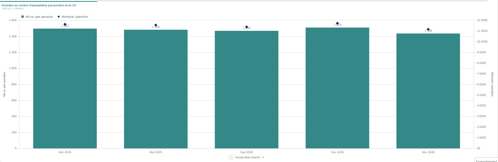
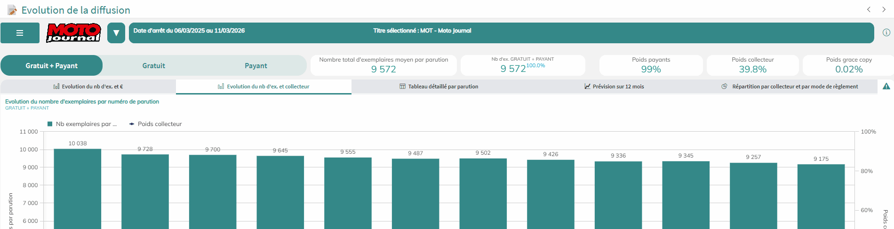
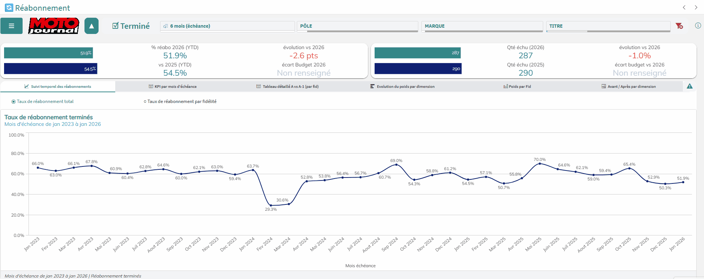

Aller directement à
📥
Exporter un tableau
Les tableaux de données peuvent être exportés en Excel (.xlsx). Faites un clic droit sur le tableau souhaité pour afficher le menu d'action, puis cliquez sur "Télécharger" et choisissez le format Données.

💡 Seuls les tableaux sont exportables en XLS. Les graphiques s'exportent en image (ou PDF). Le nom du fichier reprend le titre du visuel.
📅
Changer le niveau temporel (cycle de graphique)
En bas de certains graphiques, un sélecteur de granularité temporelle permet de choisir le niveau d'affichage : Année, Mois, Date, Numéro de parution… Cliquez sur la valeur affichée pour basculer vers le niveau suivant ou précédent. Utile pour passer d'une vision annuelle à une vision mensuelle ou parution par parution.

💡 La granularité choisie s'applique uniquement au graphique concerné, pas à toute la page.
🔄
Cycle de filtre — changer de niveau en un clic
Certains filtres disposent également d'un mécanisme de cycle. En cliquant sur la valeur du filtre, vous passez au niveau suivant (ex. : de "Mois" à "Trimestre" à "Année").

🔽
Dimensions & niveaux de hiérarchie
Certains graphiques permettent de "descendre" dans la hiérarchie des données en cliquant sur un élément. Par exemple, cliquer sur une durée regroupée permet d'afficher le détail par durée. Ce mécanisme de drill-down est indiqué par une icône de hiérarchie dans le coin du visuel. Pour remonter d'un niveau, utilisez le bouton de retour qui apparaît.

💡 Les niveaux de hiérarchie disponibles sont documentés dans l'aide contextuelle de chaque écran (bouton i).
⭕
Boutons radio — changer la vue d'un graphique
Certains graphiques proposent plusieurs modes de visualisation accessibles via des boutons radio (petits cercles en haut du graphique). Par exemple sur l'écran Réabonnement, vous pouvez passer du taux de réabonnement total au taux de réabonnement par fidélité d'un simple clic. Les données restent les mêmes, seul l'angle d'analyse change.
